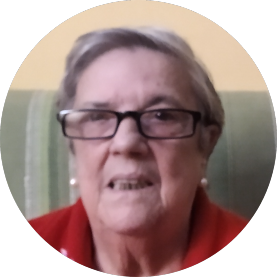
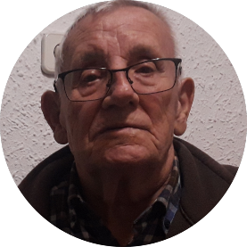

Veure el vídeo
×
Carmen
La Yolanda Montesionos, entrevista a la Carmen Sayago de 77 anys, va venir de Huelva per motius de treball.

Juan Pedro
La Laura Cordero entrevista en Juan Pedro Cordero de 50 anys. Lloc d’origen: Casas de Millán (extremadura)

Maria Hernandez
El Joel Moya entrevista a María Hernández, de 74 anys, que va venir d’Almeria per continuar els seus estudis.

Maria Jose
El Santi Caña, entrevista la Maria José Vidal, de 54 anys. Va venir de Lleó per la mort d’un familiar.

Veure el vídeo
×
Romualdo
L'Ans Muhammad entrevista a Romualdo Higuero, de 85, va venir de Badajoz buscant treball.

Infografia
Aquesta és la infografia del equip 1 "Petjades".